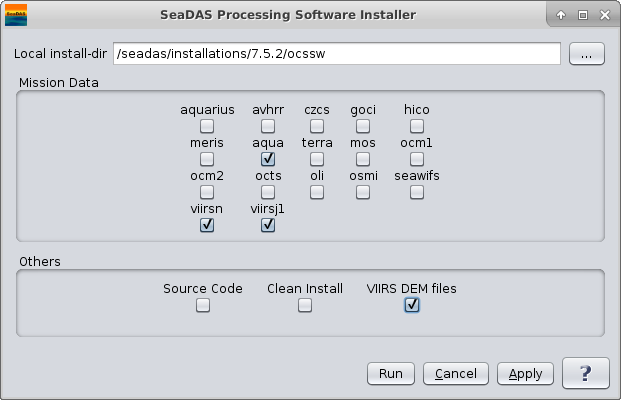

| install_ocssw.py | |
Installs or updates OCSSW processing package.
Location
Details
Command Line Usage
OCSSW -> Install/Update OC Processors
<Install/Update OC Processors executes install_ocssw.py which installs or updates the OCSSW package for SeaDAS. When SeaDAS first installs OCSSW package, the menu item would display as "Install OC Processors". Afterwords, it's displayed as "Update OC Processors".
You can access the OCSSW installer GUI from the Tools/SeaDAS Processing/Install/Update OC Processors menu. The ocssw install/update GUI initially displays a default window, as shown in the image below, to select installation directory and mission data files to be included in the installation. If the data files of a mission already exists in the system, the checkbox for that mission would be selected in the initial screen. Users can leave it selected for an update or deselect to skip its installation.
|  |
| UI Element Name | Type | Description | Required/Optional | Default Value |
| install-dir | string | destination directory for install. Defaults to $OCSSWROOT or "$HOME/ocssw" if neither are given. | Optional. The default installation directory is $USER_HOME/ocssw. | $OCSSWROOT if it exists, otherwise "$HOME/ocssw" |
| aquarius | boolean | install Aquarius files | Optional | false |
| avhrr | boolean | install AVHRR files | Optional | false |
| czcs | boolean | install CZCS files | Optional | false |
| goci | boolean | install GOCI files | Optional | false |
| hico | boolean | install HICO files | Optional | false |
| meris | boolean | install MERIS files | Optional | false |
| aqua | boolean | install MODIS Aqua files | Optional | false |
| terra | boolean | install MODIS Terra files | Optional | false |
| mos | boolean | install MOS files | Optional | false |
| ocm1 | boolean | install OCM1 files | Optional | false |
| ocm2 | boolean | install OCM2 files | Optional | false |
| octs | boolean | install OCTS files | Optional | false |
| osmi | boolean | install OSMI files | Optional | false |
| seawifs | boolean | install SeaWiFS files | Optional | false |
| viirsn | boolean | install VIIRSN files | Optional | false |
| viirsj1 | boolean | install VIIRSJ1 files | Optional | false |
| Source Code | boolean | install source code | Optional | false |
| Clean Install | boolean | do a clean install by deleting the install directory first, if it exists | Optional | false |
| VIIRS DEM Files | boolean | install VIIRS DEM files needed for geolocation | Optional | false |
| UI Element Name | Type | Description |
| Browser Button | Button | Selects installation directory |
| Run | Button | Executes install_ocssw.py with arguments provided in the UI. |
| Cancel | Button | Closes current processor GUI. |
| Apply | Button | Makes current arguments effective. |
| ? | Button | Displays the help content of the current command. |
Usage: install_ocssw.py [options]
Options:
--version show program's version number and exit
-h, --help show this help message and exit
-v, --verbose Print more information while running
-i INSTALL_DIR, --install-dir=INSTALL_DIR
destination directory for install. Defaults to
$OCSSWROOT or "$HOME/ocssw" if neither are given.
-g GIT_BASE, --git-base=GIT_BASE
web location for the git repositories
-b GIT_BRANCH, --git-branch=GIT_BRANCH
branch in the git repositories to checkout
-a ARCH, --arch=ARCH set system architecture (linux, linux_64,
macosx_intel)
-s, --src install source code
-l LOCAL, --local=LOCAL
local directory containing previously downloaded
bundles
-c, --clean Do a clean install by deleting the install directory
first, if it exists
--curl use curl for download instead of wget
--no-update do not update the git repositories or luts
--save-dir=SAVE_DIR destination directory to save all of the install
files.
--aquarius install Aquarius files
--avhrr install AVHRR files
--czcs install CZCS files
--goci install GOCI files
--hico install HICO files
--meris install MERIS files
--aqua install MODIS Aqua files
--terra install MODIS Terra files
--mos install MOS files
--msis2a install MSI S2A files
--msis2b install MSI S2B files
--ocm1 install OCM1 files
--ocm2 install OCM2 files
--octs install OCTS files
--olcis3a install OLCI Sentinel 3A files
--oli install Landsat 8 OLI files
--osmi install OSMI files
--seawifs install SeaWiFS files
--viirsn install VIIRS NPP files
--viirsj1 install VIIRS JPSS1 files
--viirsdem install VIIRS digital elevation map (DEM) files
--direct-broadcast install direct broadcast files